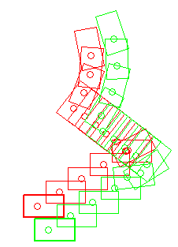
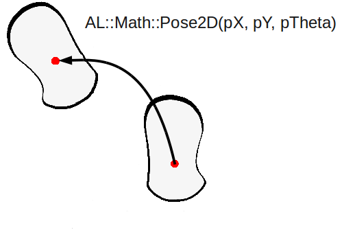

Walk control¶
NAOqi Motion || Overview | API | foot planner Tutorial | robot position Tutorial
What it does¶
These API are dedicated to make NAO walk, in an omnidirectional mode.
NAO’s walk is stabilized using feedback from his joint sensors. This makes the walk robust against small disturbances and absorbs torso oscillations in the frontal and lateral planes.
NAO is able to walk on multiple floor surfaces such as carpet, tiles and wooden floors.
He can transition between these surfaces while walking. However, large obstacles can still make him fall, as he assumes that the ground is more or less flat.
How it works¶
NAO’s walk uses a simple dynamic model (Linear Inverse Pendulum) inspired by work of Kajita et al.(1), and is solved using quadratic programming(2).
References
(1) S. Kajita and K. Tani. Experimental study of biped dynamic walking in the linear inverted pendulum mode. IEEE Int. Conf. on Robotics and Automation, 1995.
(2) P-B. Wieber. Trajectory free linear model predictive control for stable walking in the presence of strong perturbation. IEEE Int. Conf. on Humanoids, 2006.
Foot Step planner¶
The basic foot planner is used by the walk process, whatever the walk control you choose: ALMotionProxy::setWalkTargetVelocity(), ALMotionProxy::walkTo() or ALMotionProxy::setFootSteps().
It uses an ALMath::Pose2D multipication (libalmath API reference). It is composed of a translation by pX and pY, then a rotation around the vertical z axis pTheta.
To avoid foot collisions during planning, we use clamp algorithm that are described in the foot planner Tutorial.
Gait parameters¶
It is possible to define custom gait parameters for the walk, by giving a custom Gait config.
A gait configuration is defined by:
- MaxStepX: the maximum translation along the X axis for one step
- MaxStepY: the maximum translation along the Y axis for one step
- MaxStepTheta: the maximum rotation around the Z axis for one step
- MaxStepFrequency: the maximum step frequency (normalized between 0.0 and 1.0)
- StepHeight: the fixed height of the step
- TorsoWx: the translation of the torso along the X axis
- TorsoWy: the translation of the torso along the Y axis
Programmatically, you can access to the gait parameters (Default, Max, Min), using the ALMotionProxy::getFootGaitConfig() method.
The table below gives the default, minimum and maximum gait parameters.
| Name | Default | Minimum | Maximum |
|---|---|---|---|
| MaxStepX | 0.040 meters | 0.001 meters | 0.080 meters(3) |
| MaxStepY | 0.140 meters | 0.101 meters | 0.160 meters |
| MaxStepTheta | 0.349 radians | 0.001 radians | 0.523 radians |
| MaxStepFrequency | 2.381 Hz | 1.667 Hz | 2.381 Hz |
| StepHeight | 0.020 meters | 0.005 meters | 0.040 meters |
| TorsoWx | 0.000 radians | -0.122 radians | 0.122 radians |
| TorsoWy | 0.000 radians | -0.122 radians | 0.122 radians |
(3) we recommend 0.060 meters for StepX for more stability, 0.080 meters could be use on a flat hard floor.
A custom Gait config allows the robot to modify the default walk while still using the usual motion API. This custom configuration can be used for both walkTo and setTargetVelocity methods.
For example, you can make NAO lift his feet higher to try and go over some small cables, etc.
The following examples give some custom gait for NAO:
Torso height trajectory¶
Since the 1.12 NAOqi version, we have introduced an algorithm that automatically computes the torso height to avoid singularity and to be able to make longer steps.
This new feature, with the same gait parameters than in 1.10 NAOqi version, creates torso oscillation and could increase the torque needed in the legs joints. This feature increases the battery consumption and generates a faster increase of the joint temperature.
Arm motions¶
The arm motion amplitude during walk is dependent on the step frequency and the step length.
The motion can be activated or deactivated at any moment during a walk.
Any user commands for the arms will have priority over the default arm motions during a walk. This enables you to control the arms as you wish during a walk. If the default arm movements are enabled, default movements resume once you have finished controlling arm movements.
# Example showing how to disable left arm motions during a walk
leftArmEnable = False
rightArmEnable = True
proxy.setWalkArmsEnabled(leftArmEnable, rightArmEnable)
# disable right arm motion after 10 seconds
time.sleep(10)
rightArmEnable = False
proxy.setWalkArmsEnabled(leftArmEnable, rightArmEnable)
# Example showing how to get the enabled flags for the arms
result = proxy.getWalkArmsEnabled()
print 'LeftArmEnabled: ', result[0]
print 'RightArmEnabled: ', result[1]
Getting started¶
This section describes some key points to deal with walk control.
Walk Initialization¶
Before launching the walk process, we have to check the configuration of joints, in order to be sure:
- to be out of singularity and that
- the two feet are flat on the ground.
If all the conditions are not satisfied, the walk process executes an initialization within an indeterminate time, depending on the actual config of the robot.
The execution of the ALMotionProxy::walkInit() does the same initialization stuff. And by calling this function before the walk process, you make sure that the walk process will not take an indeterminate time at the beginning.
Robot Position¶
The ALMotionProxy::getRobotPosition() method gives you the position of NAO in the SPACE_WORLD.
Due to the preview control, there is some unchangeable foot step (already in the process queue). So, if the walk process runs and you send a new target, your change is applied after the unchangeable footStep. The ALMotionProxy::getNextRobotPosition() method gives you the position of the robot after the unchangeable foot step.
The figure below illustrates this phenomenon. You can also look at the robot position Tutorial.
# created a walk task
motionProxy.walkInit()
motionProxy.post.walkTo(0.2, 0.0, 0.1)
# wait that the walk process start running
time.sleep(0.1)
# get robotPosition and nextRobotPosition
robotPosition = motionProxy.getRobotPosition(False)
nextRobotPosition = motionProxy.getNextRobotPosition(False)
Synchronization¶
waitUntilWalkIsFinished¶
The ALMotionProxy::waitUntilWalkIsFinished() method can be used to block your script/code execution until the walk task is totally finished.
# Start a walk
proxy.post.walkTo(1.0, 0.0, 0.0, 1.0)
# Wait for it to finish
proxy.waitUntilWalkIsFinished()
# Then do something else
walkIsActive¶
The ALMotionProxy::walkIsActive() method returns True while the walk task is active.
# start a 1 meter walk
proxy.post.walkTo(1.0, 0.0, 0.0, 1.0)
while proxy.walkIsActive():
# do something
# sleep a little
time.sleep(1)
# when finished do something else
stopWalk¶
The ALMotionProxy::stopWalk() method ends the walk task as soon as the robot is in a relatively safe position, meaning that the two feet are on the ground. This avoids stopping in an unstable position (for example with one foot still in the air), contrary to the ALMotionProxy::killWalk() method.
This method is slower than the walk killing, but safer, and a faster than setting target velocity to 0.
killWalk¶
The ALMotionProxy::killWalk() ends the walk task brutally, without attempting to return to a balanced state. If NAO has one foot in the air, he could easily fall.
# End the walk suddenly (~20ms)
proxy.killWalk()
To end the walk more gracefully, set the target velocity to zero.
# End the walk cleanly (~0.8s)
proxy.setWalkTargetVelocity(0.0, 0.0, 0.0, 0.0)
Walk protection¶
Kill the walk task when lifted¶
To stop the robot walking in the air, the FSRs are read to see if there is ground contact. When there is no ground contact, the walk task is killed if it is running, and not allowed to start if absent. This feature relies on the FSR extractor of the Sensors module, which is responsible for updating the memory key:
- extractors/alfsr/footContact
By default, this feature is active. To remove this feature, follow this procedure:
# Deactivate the foot contact protection
proxy.setMotionConfig([["ENABLE_FOOT_CONTACT_PROTECTION", False]])
# Or for change the default value,
# define the new value of the key ENABLE_FOOT_CONTACT_PROTECTION
# in ALMotion.xml preference file
Kill the walk task when the stiffness is low on at least one leg joint¶
If the walk process is launched and the robot has stiffness off, our algorithm to solve the dynamics of the walk fails. This is due to the closed loop, where we inject sensor information into the algorithm. When there is no stiffness, the command and sensor values diverge. To prevent this, the walk process will be killed or prevented from launching, if one joint of the legs has a stiffness equal or less than 0,6.
By default, this feature is active. To remove this feature, follow this procedure:
# Deactivate the foot contact protection
proxy.setMotionConfig([["ENABLE_STIFFNESS_PROTECTION", False]])
# Or for change the default value,
# define the new value of the key ENABLE_STIFFNESS_PROTECTION
# in ALMotion.xml preference file
Use Cases¶
Case 1: Velocity Control¶
Velocity control enables the walk to be controlled reactively, allowing behaviors such as target tracking. It can be called as often as you like, as the most recent command overrides all previous commands.
The walk uses a preview controller to guarantee stability. This uses a preview of time of 0.8s, so the walk will take this time to react to new commands. At maximum frequency this equates to about two steps.
Parameters¶
- x [-1.0 to 1.0]: specifies the length of a step along the x axis (forwards and backwards) as a fraction of maxStepX.
- y [-1.0 to 1.0]: specifies the length of a step along the y axis (lateral) as a fraction of maxStepY.
- theta [-1.0 to 1.0]: specifies the angle between the feet as a fraction of maxStepTheta. A positive value result in a left turn(anti-clockwise) and a negative value results in a right turn(clockwise).
- frequency [0.0 to 1.0]: specifies the step frequency as a fraction of linear interpolation between minimumStepFrequency and maximumStepFrequency. One cycle is considered to be a phase of double leg support followed by a phase of single leg support.
Example¶
# Example showing the use of setWalkTargetVelocity
# The parameters are fractions of the maximum Step parameters
# Here we are asking for full speed forwards
# with maximum step frequency
x = 1.0
y = 0.0
theta = 0.0
frequency = 1.0
proxy.setWalkTargetVelocity(x, y, theta, frequency)
# If we don't send another command, he will walk forever
# Lets make him slow down (step length) and turn after 10 seconds
time.sleep(10)
x = 0.5
theta = 0.6
proxy.setWalkTargetVelocity(x, y, theta, frequency)
# Lets make him slow down(frequency) after 5 seconds
time.sleep(5)
frequency = 0.5
proxy.setWalkTargetVelocity(x, y, theta, frequency)
# After another 10 seconds, we'll make him stop
time.sleep(10)
proxy.setWalkTargetVelocity(0.0, 0.0, 0.0, frequency)
# Note that at any time, you can use a walkTo command
# to walk a precise distance. The last command received,
# of velocity or position always wins
Case 2: Destination Control¶
The ALMotionProxy::walkTo() method is a generalised implementation of walk patterns. An SE3 Interpolation is used to compute the path. It is a blocking function until walk process is finished. If you pCalled this function, the last command received overrides all previous commands.
Parameters¶
- x: the distance in meters along the X axis (forwards and backwards).
- y: the distance in meters along the Y axis (lateral motion).
- theta: the final robot orientation in radians relative to the current orientation.
Example¶
# Example showing the walkTo command.
# As length of path is less than 0.4m
# the path will use an SE3 interpolation
# The units for this command are meters and radians
x = 0.2
y = 0.2
# pi/2 anti-clockwise (90 degrees)
theta = 1.5709
proxy.walkTo(x, y, theta)

Note
In previous releases, there used to be a Dubins curve interpolation when the distance to walk was greater than 0.4m. This has now been removed, but it can still be reconstituted manually( motion_walkToDubinsCurve.py)
Case 3: Step Control¶
It is possible to control NAO’s steps individually, through a footstep planner. This allows to implement for example dance like movements, where the footsteps need to be placed precisely:
- each leg can be controlled independently, giving the possibility of non symetric behaviour (for example, making the robot “limp”)
- each footstep has its own position (X, Y, Theta)
The footsteps planner either associates footsteps with the time they occur in ALMotionProxy::setFootSteps() (in that case, this is a non-blocking call) or with a normalized footstep speed in ALMotionProxy::setFootStepsWithSpeed() (this is a blocking call).
If you want to modify the footsteps planner, you may want to clear the footstep planner and add your new steps or to add the new footsteps at the end of the planner. To do so, you can use the clearExistingFootsteps parameter. If it is set to true, all footsteps that can be cleared are removed and the new footsteps are added, else the new footsteps are simply added at the end.
At any moment, you can retrieve the planned footsteps using ALMotionProxy::getFootSteps(). This method gives:
- the footsteps that cannot be cleared (current steps and immediate followers), and
- the ones that can be safely removed (See robot position Tutorial).